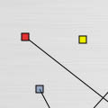

GrainBox. version beta 0.1
|
||||||
 Description
Description
Grainbox is a two channel granular synthesis sound manipulator. The aim of the software was to try to create an interface where the many parametres involved in granular synthesis are represented and controlled on a two dimensional space, rather than with sliders and buttons. It accepts MONO sounds and outputs stereo signal (which can be recorded).
You can load up many Grainboxes within the same program by hitting Command+R. This software is a sketch for a further exploration and serves as a prototype.
Unfortunately this software is only for OS X at the moment. It might change soon. Stay tuned!